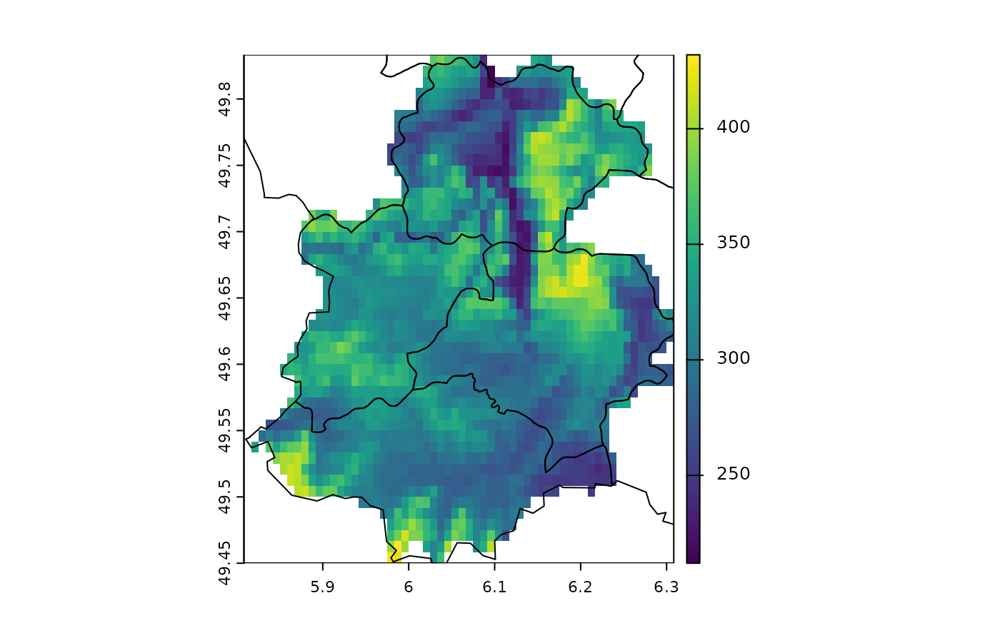
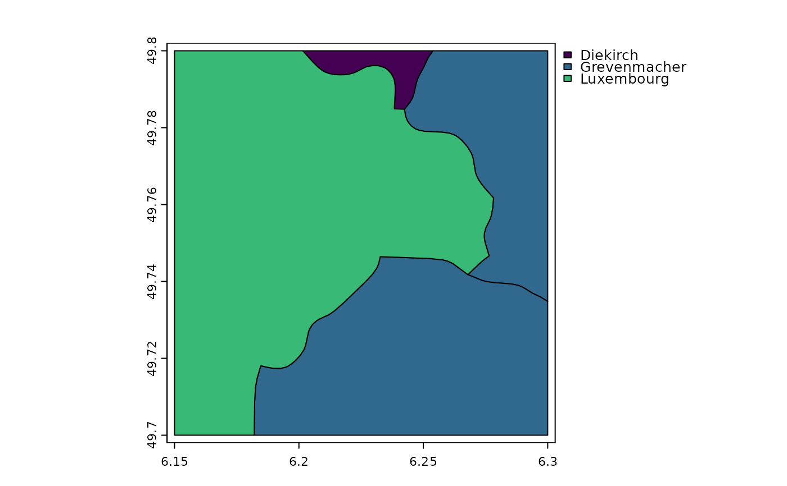

crop.RdCut out a part of a SpatRaster with a SpatExtent, or another object from which an extent can be obtained.
You can only crop rectangular areas, but see mask for setting cell values within SpatRaster to NA. Also note that the SpatRaster returned may not have the exactly the same extent as the SpatExtent supplied because you can only select entire cells (rows and columns), and you cannot add new areas. See methods like resample and disagg to force SpatRasters to align and extend to add rows and/or columns.
You can crop a SpatVector with another SpatVector. If these are not polygons, the minimum convex hull is used). Unlike with intersect the geometries and attributes of y are not transferred to the output. You can also crop a SpatVector with a rectangle (SpatRaster, SpatExtent).
# S4 method for SpatRaster
crop(x, y, snap="near", mask=FALSE, touches=TRUE, extend=FALSE, filename="", ...)
# S4 method for SpatRasterDataset
crop(x, y, snap="near", extend=FALSE)
# S4 method for SpatRasterCollection
crop(x, y, snap="near", extend=FALSE)
# S4 method for SpatVector
crop(x, y, ext=FALSE)
# S4 method for SpatGraticule
crop(x, y)SpatRaster or SpatVector
SpatRaster, SpatVector, SpatExtent, or any other object that has a SpatExtent (ext returns a SpatExtent)
character. One of "near", "in", or "out". Used to align y to the geometry of x
logical. Should y be used to mask? Only used if y is a SpatVector, SpatRaster or sf
logical. If TRUE and mask=TRUE, all cells touched by lines or polygons will be masked, not just those on the line render path, or whose center point is within the polygon
logical. Should rows and/or columns be added if y is beyond the extent of x? Also see extend
character. Output filename
additional arguments for writing files as in writeRaster
logical. Use the extent of y instead of y. This also changes the behavior when y is an extent in two ways: (1) points that are on the extent boundary are removed and (2) lon/lat extents that go beyond -180 or 180 degrees longitude are wrapped around the earth to include areas at the other end of the dateline
SpatRaster
r <- rast(xmin=0, xmax=10, ymin=0, ymax=10, nrows=25, ncols=25)
values(r) <- 1:ncell(r)
e <- ext(-5, 5, -5, 5)
rc <- crop(r, e)
# crop and mask
f <- system.file("ex/elev.tif", package="terra")
r <- rast(f)
f <- system.file("ex/lux.shp", package="terra")
v <- vect(f)
cm <- crop(r, v[9:12,], mask=TRUE)
plot(cm)
lines(v)

# crop vector
f <- system.file("ex/lux.shp", package="terra")
v <- vect(f)
e <- ext(6.15, 6.3, 49.7, 49.8)
x <- crop(v, e)
plot(x, "NAME_1")
